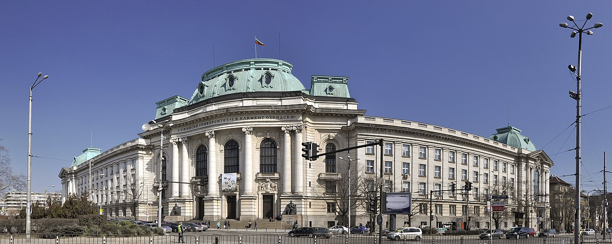
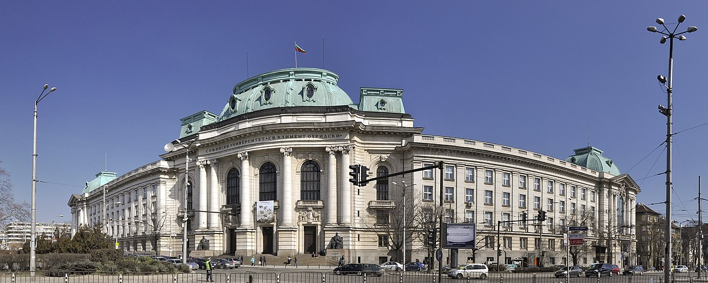

В София се намират 22 от 52 акредитирани висши училища в България, в които се обучават над 100 хиляди студенти. Четири от петте ВУЗ-ове с най-висок рейтинг са в столицата – Софийският университет „Св. Климент Охридски“ (СУ), Медицинският университет, Техническият университет и Нов български университет. СУ е най-старото висше училище в страната. Основан на 1 октомври 1888 г., днес той има 16 факултета и 3 департамента, като в него се обучават над 20 хиляди студенти.
 
